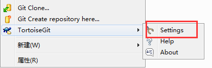
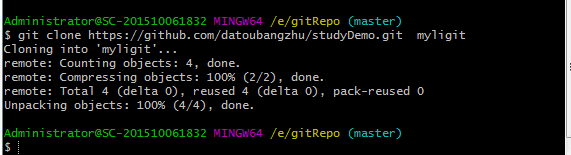
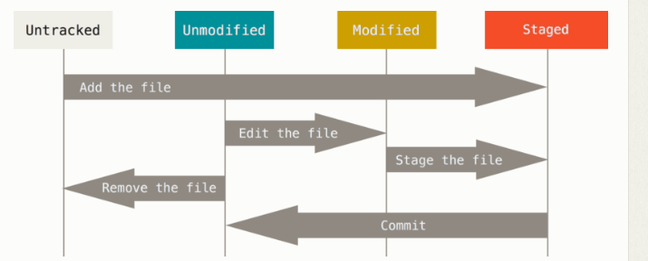
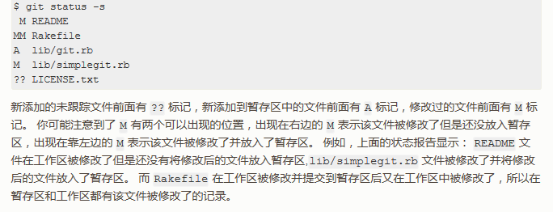
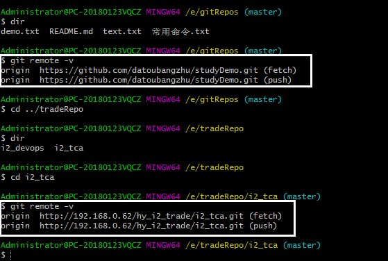
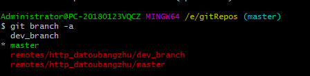

一、基础
- 全局设置用户名
git config --global user.name "datoubangzhu"
git config --global user.email 2419475724@qq.com 添加用户名和邮箱作为标识
——此用户名和账号一个软件只有一个，不管在电脑中建立了多少和不同git项目的连接，在push时，git上都会显示是由此user.name 和user.email推送的；
git config --list 检查你的配置，可以使用命令来列出所有git的配置信息，具体包括你的git中user.name ; user.email ; 远程仓库的名称地址；远程分 支 的信息；
- 保存登录信息，避免每次提交都要再输入用户名密码
安装TortoiseGit，在设置里

进入设置界面

设置全局配置，在文件中添加一段配置如下

[credential]
helper = store
- 创建目录和文件
mkdir gitRepo 创建一个目录，目录名称自己写
//进入此目录执行
git init 该命令将创建一个名为 .git 的子目录，这个目录含有你初始化的 Git 仓库中所有的必须文件， 但是，在这个时候，我们仅仅是做了一个初始化的操作，你的项目里的文件还没有被跟踪。
mkdir text.txt
git add text.txt 实现对指定文件的跟踪,把这个文件添加到暂存区中去，执行完没有任何提示，表示已经添加成功
git commit text.txt -m "第一次提交说明 2018-4-11" 只对刚刚跟踪的文件进行提交并写一个备注（提交版本号，时间等）
- git仓库
git add 将文件或文件夹提交到暂存区；
git commit 将文件提交到本地仓库；
git push 将文件推送到远程仓库；
二、克隆git网站上的指定项目·
git clone https://github.com/datoubangzhu/studyDemo.git mylibgit 将目标地址文档克隆到本地，放到命名为myligit的文件夹下

文件有四种状态，可以通过git status 命令进行查看（新建的空文件，不会被此命令找到，当文件夹内有东西才会被发现）
git add 可以添加跟踪的文件，例如在仓库中增加了一个文件夹milk，执行git status会提示 Untracked files: milk
此时通过此命令可以将这个文件添加到暂存区（图片中最右边的状态），此时执行git status 会提示：Changes to be commited ：new file : milk
git add 可以将修改后的文件再次更新到暂存区
例如修改了ta.txt 文件，修改后执行git status会提示：Changes not staged for commited: modified: ta.txt
git add 文件名 当新增了文件（文件中有内容），可以直接用git add 提交整个文件
遇到文件路径过长时可以执行命令：git config core.longpaths true

git status -s 对于最新的文件（夹）状态更新看的更直观

git commit -m "xxxx"
提交：每次准备提交前，先用 git status 看下，是不是都已暂存起来了， 然后再运行提交命令 git commit -m "提交说明"
git commit -a "xxx" 此命令为跳过暂存的步骤，不用git add ，直接提交
完成提交步骤后，文件（夹）就被保存到本地仓库中，如果要提交到远程服务器上对应的分支，则要执行如下命令
git push origin 如果当前分支与远程分支存在追踪关系，则本地分支和远程分支都可以省略，将当前分支推送到origin主机的对应分支
// git push 详细用法 ： https://www.cnblogs.com/qianqiannian/p/6008140.html
——— git push origin master：refs/for/master 将本地的master分支推送到远程主机origin上的对应master分支， origin 是远程 主机名，第一个master是本地分支名，第二个master是远程分支名。
三、远程仓库
- git remote 查看远程仓库
前面已经克隆了一个仓库到本地，并放到myligit文件夹下面，使用git remote可以看到起码有一个origin，git默认使用这个名字来标识你所克隆的原始仓库，这是git给克隆仓库服务器起的默认名字
git remote -v 会显示需要读写远程仓库使用的 Git 保存的简写与其对应的 URL

- git remote add
git remote add <shortname> <url> 添加远程仓库，指定一个可以轻松引用的小写简称
例如
//添加远程仓库，名称为 origin，地址为https://github.com/nongshuqine/-git-.git
git remote add pb https://xxxxxx 现在你可以在命令行中使用字符串pb来代替整个URL，例如，想拉取git上有但是你没 有的信息，可以运行git fetch pb
git remote rename name1 name2 对远程仓库重命名，git remote rename pb ppb 即将远程仓库pb改名为ppb
git remote rm name 移除远程仓库
git remote show http_datoubangzhu 查看名为http_datoubangzhu这个远程仓库的信息，具体包括：远程仓库的url地址，远程分支信息
四、分支与合并
- git branch -a 查看所有分支
- git branch dev_branch 新建一个本地分支
- git branch -d dev_branch 删除分支
- git checkout dev_branch 切换到名为dev_brache的另一个（本地）分支
分支切换时可能会提示分支有代码没有提交或储存，如果这时候也不想提交，就可以存储起来。命令： git stash
//切换到主分支之后，通过以下命令指定要合并的分支，把它合并进来
- git merge dev_branch
git push [remote-name] [branch-name] 推送本地分支到远程仓库 （ git push http_datoubangzhu dev_branch 把本地分支提交到远程仓库 ）
- git branch -a 查看有几个远程分支（当前HEAD指针所在分支前有个“ * ”标志 ）

- git branch xxxx(版本号)
建立一个分支（默认叫secondary），内容回退到xxxx版本。
五、回退版本
每次commit时都会有一个版本号，通过使用以下命令指定这个版本号可以恢复到那个记录状态
- git reset --hard xxxx(版本号)
常用命令:参考官方文档 https://git-scm.com/book/zh/v2
git push -u origin master //会遇到git登陆验证
《项目中git》
在目标文件夹下
git clone xxx （xxx表示git上路径地址）